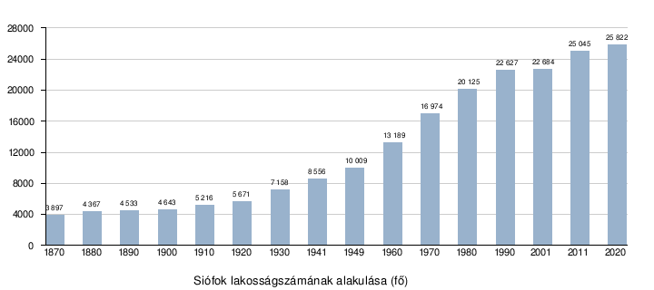
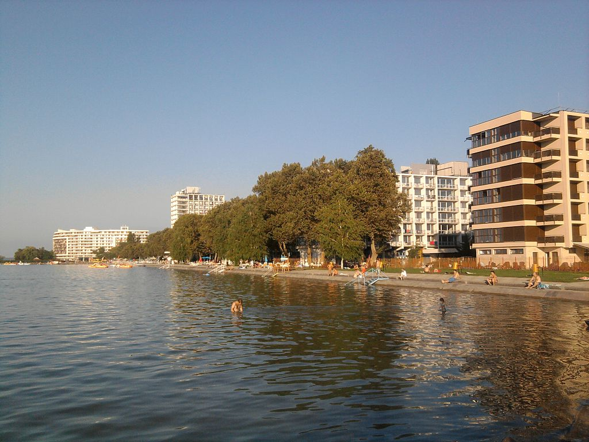
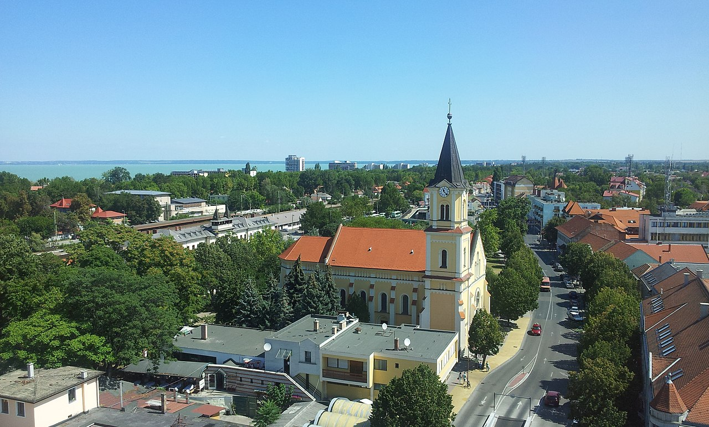
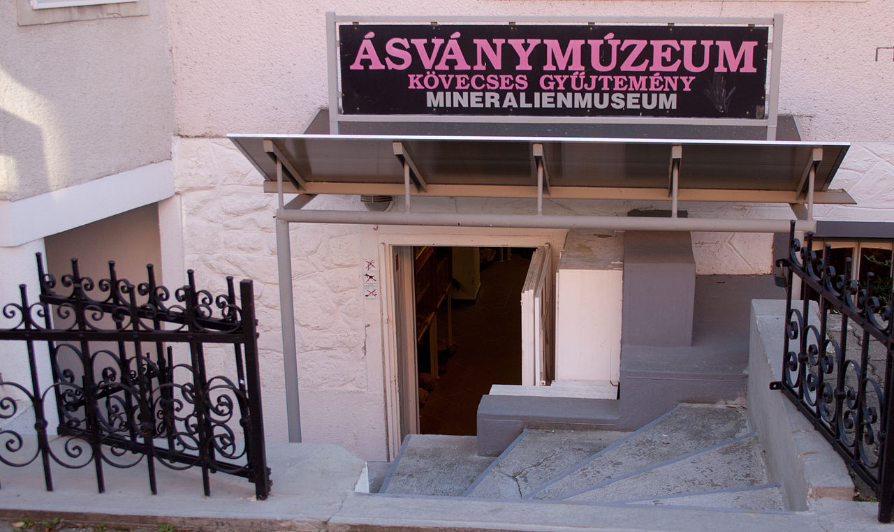

| Balatonfured | Siófok | Keszthely | Badacsonytomaj | Balatonalmádi | Tihany | Káptalanfured |
|---|
Siófok (középkorban: Fuk, régebben: Fok, régies németül: Fock) kikötő- és üdülőváros Somogy megye északkeleti részén. A Siófoki járás székhelye, a Balaton-part legnépesebb és legnagyobb területű, Somogy megye második legnépesebb települése. Az 1950-es megyerendezésig, a város a Sió-tól nyugatra elterülő része Somogy vármegyéhez, a keletre fekvő terület pedig Veszprém vármegyéhez tartozott. Magyarországon, a kereskedelmi szálláshelyek 2019-es összesített vendégéjszakaszáma alapján a 6. legnépszerűbb üdülőtelepülés. A település nevezetes, az emblematikus épületeiről, remek strandjairól és az éjszakai életéről. A közeli Ságvár település miatt, a Balaton környékének egyik legrégebben lakott területe.
A 20. század során a városhoz csatolták Balatonkiliti és Balatonújhely településeket. A város a "Sió" előnevet a rajta átfolyó Sió folyóról kapta.
Siófok a Balaton keleti medencéjének déli partján fekszik, ott, ahol a Sió ered a tóból. Északról a Balaton, keletről a Mezőföld szélét képező hullámos fennsíkok, délről és nyugatról pedig Külső-Somogynak a Balaton déli oldalára jellemző szelíd lejtésű dombsorai határolják.
Az 1950-es megyerendezésig a Sió határvonal volt Veszprém és Somogy vármegye között; jelenleg Siófok Somogy megyéhez tartozik, annak második legnagyobb városa, egyben a Balaton-part legnagyobb települése. A 20. század során határát többször kiterjesztették, így ma a déli part 70 kilométeres szakaszából 17 kilométer tartozik hozzá.
A város partvonala két szakaszra osztható. A Sió csatornától nyugatra fekvő szakasz Ezüstpart néven ismert, keletre pedig az Aranypart található. A szállodák nagy része és a város szórakoztató központja, a Petőfi sétány az Aranyparton található. A sétány mentén helyezkedik el a fizetős Nagystrand, amely jelenleg (2016. óta) a Plázs Siófok[3] nevet viseli. Kicsit tovább haladva keletre található a szabadstrand, amely kilométereken keresztül egészen Szabadifürdőig húzódik. Az Ezüstpartot inkább egy-két szintes nyaralók és panziók uralják, ott végig szabadstrand van a partvonal mentén.
Siófok környéke már rómaiak korában is lakott terület volt. A római hódítás az 1. században ért el a mai Siófok környékére, itt vezetett a Sopianaeból (Pécs) Triccianán (Ságvár) át Arrabonába (Győr) vezető útvonal. Sectus Aurelius Victor 3-4. századból származó feljegyzései szerint Galerius császár a jelenlegi Siófok területén a Lacus Pelso (a Balaton latin neve) ingoványos részeinek lecsapolására 292-ben zsilipet építtetett, és erdőket irtatott ki.
A honfoglalás után, 1055-ből származó tihanyi alapítólevélben találkozhatunk e hely említésével: „Rivulus namque, qui dicitur Fuk fluens”, azaz „A kis patak, amit Fuknak neveznek is az említett tóból ered, olyan helyen van, amelyen a népeknek átjárása van egy régebbi hídon és gyakran gázlón is”.
Fuk mint falunév először 1137-ben szerepel írásban az adózó helységek között, az 1528-ban megjelent Tabula Hungariae Fok néven tünteti fel. A Siófok szóösszetétel 1790 óta ismeretes.
A tatárjárás után Fok újratelepült, majd 1552-ben a törökök kerítették hatalmukba Fokot és környékét. Siófok hadikikötő lett és erődöt is építettek itt, az erődítmény a mai kórház közelében lévő „Granárium” dombján volt. A vidék 1688-ban szabadult fel a török megszállás alól. Fok a veszprémi káptalan tulajdonába került, aki telepesekkel népesítette be, és 1693-ban fatemplomot építtetett a lakosság számára.
Rákóczi szabadságharca idején itt húzódott Vak Bottyán híres Sió-vonala, amelynek végső sarkpontja volt a siófoki erősség. 1705-ben II. Rákóczi Ferenc fejedelem a mai címer alapjául szolgáló pecsétet adományozott Fok falunak, majd 1736-ban épült fel a Szűz Mária szeplőtelen fogantatása tiszteletére a barokk stílusú plébániatemplom.
Jelentősebb fejlődés a 19. században indult el a településen. 1810-től az Erdély-Adria gyorspostakocsi járat már érintette Siófokot, de önálló postamesterség csak 1867-től működött itt. A víz szabályozása 1810-től kezdődött a faluban. Majd Beszédes József vízügyi mérnök elképzelése alapján kitisztogatták a Sió medrét, újra malmokat üzemeltettek, a Balaton vízszintje egy métert apadt, így 51 000 hold terület vált szabaddá a víztől, a Sió szabályozásával 6000 hold szabad telek alakult ki.
A település életében jelentős változást hozott a Balatoni Gőzhajózási Részvénytársaság megalakulása 1846-ban. Ebben nagy szerepe volt Kossuth Lajosnak, aki saját kezével írta meg a gazdasági társaság alapító okiratát, és gróf Széchenyi Istvánnak, a részvénytársaság örökös elnökének. Ugyanebben az évben, szeptember 21-én vízre bocsátották a Kisfaludy kerekesgőzöst.
1861-ben adták át a forgalomnak a Buda-Nagykanizsa közötti vasutat. 1863-ban elkészült a vasútállomás (bár már 1861-ben megállt itt a vonat), egy év múlva pedig megépült az első, mólókkal védett hajókikötő. Ugyanebben az évben új Sió-zsilipet is nyitottak, melynek fő feladata a vízszint-szabályozás volt. A fazsilipet vasszerkezetből készült zsilip 1893-ban váltotta fel. Mezővárosi rangot, azaz országos vásártartási engedélyt 1865-ben kapott a település. Ekkor 200 házat és 1500 lelket számláló község volt Siófok.
Siófokon, vagy ahogy akkoriban többen nevezték: Zsidófokon (a források alapján ez inkább leíró jellegű, mint pejoratív kifejezés volt[4]) egykoron nagyszámú zsidó vallású lakos élt. Az 1860-as évek elején a létszámuk 347-re tehető, közte 70 kereskedő élt itt, akiknek nagy szerepe volt abban, hogy a város Európa egyik vonzó üdülőhelyévé vált.[5]
1866-ban jelent meg az első hirdetés Balatontavi Fürdő Siófok címmel a Zala-Somogyi Közlönyben. Végh Ignác bérlő a veszprémi káptalannal kötött 12 éves fürdőjog bérleti szerződést, amit újabb 12 évre meghosszabbítottak. 1878-ban készítette el a „Magyar Tenger” feliratú fürdőházat, amely a Neuschlass építő cég tervei szerint épült, svájci stílusban, díszes homlokzattal, száz személyes társalgóval, vízre nyíló nagy ablakokkal, emeletes kilátószobával, nyolcvan fürdőkabinnal.
A veszprémi káptalan 1885-ben kezdett telkeket parcelláztatni és megkezdődött a mai fürdőtelep kiépülése. Jellemző a balatoni táj megejtő és ihlető vonzerejére, hogy az első villatulajdonosok jó része festőművész volt – Than Mór, Vágó Pál, Feledi-Flesch Tivadar (Zichy Mihály veje) és Tölgyessy Arthur villája állt már ebben az időben Siófokon.
1888-ban Baross Gábor nyújtott állami támogatást a Balatoni Gőzhajózási Részvénytársaság újjászervezéséhez. 1889-ben vízre bocsátották az új utasszállító hajót, a Kelént, aztán 1891-ben elkészült a Helka és az új Kelén.
1891 áprilisában a Siófok Balatonfürdő Rt. néven alakult meg az a tőkecsoport, mely megváltotta a káptalantól a fürdőjogot, s megvásárolta az építkezésekhez és parkosításhoz szükséges 60 holdnyi bozótos, vizes, mocsaras területet, s azt földdel töltötte fel. A társaság vezetője 1884-től 1905-ig Glatz Henrik, a Franklin Irodalmi és Nyomdai Rt. alapítója volt. Megindult a nagyobb szállodák: a Sió és a Hullám, később a Központi Szálló építése. Az új fürdőtelepet ünnepélyes külsőségek között 1893. július 18-án nyitották meg, s ekkor hozták nyilvánosságra, hogy a Belügyminiszter a fürdőtelep részére a „gyógyfürdő” elnevezés használatát engedélyezte. Ehhez a pihentető környezethez tartozott az 1875-től indult, nagy egyéniségeket felvonultató siófoki színházi élet is.
1900-ban kezdte meg működését a Balatoni Halászati Részvénytársaság. Ugyanebben az évben épült meg a lóversenypálya 1500 személyes lelátóval, itt voltak a Balaton-átúszás célpontjai, s minden évben úszó- és teniszversenyek gazdagították a siófoki nyár élményeit. Mozgalmas fürdőélete révén Siófok a budapesti nagypolgárság művész- és színészvilág kedvelt tartózkodási helyévé vált. (Karinthy Frigyes, Krúdy Gyula, ifj. Latabár Árpád, Kabos Gyula).
1904-ben elkészült az új vasútállomási épület, melyet 1989 óta ismét az eredetihez hasonló pompájában csodálhatunk meg. A régi épületet, amely a mostani épület és a felüljáró között helyezkedett el, lebontották.
1906. október 23-án létrejött a vasúti kapcsolat Kaposvárral: megkezdte működését a Mocsolád-Tab-Siófok Helyiérdekű Vasút. (A vasútvonal ma a MÁV menetrendjében a 35. számot viseli.)
1919 augusztusában a település egy időre a nagypolitika középpontjába került, miután Horthy Miklós a Tanácsköztársaság leverésére készülve, az antant engedélyének birtokában a Dunántúlra vonult csapataival, főhadiszállását pedig itt alakította ki.[6]
A második világháború végén a települést nagy károk érték. A két hónapig itt húzódó frontvonal a parti építményekben, a nyaralókban, a szálló- és lakóépületekben, a hajóparkban sok kárt tett. Később Siófok a szakszervezeti és vállalati üdültetés központja lett. Újjáépült üdülőházai, valamint a csatornázás, szennyvíztisztítás és vízmű, illetőleg a partvédő művek kialakítása a tókörnyék legnagyobb, legjelentősebb, nagy tömegeket befogadó helyévé tette Siófokot.
A második világháború alatt, 1944-ben a nagyközségből közel 500 zsidót hurcoltak el, közülük 72-en tértek vissza a második világháború után.
1947-ben a Sió-csatorna építési munkálatainak keretén belül elkészült az új zsilip, mely már hajók közlekedését is lehetővé tette. 1950-től Somogy megyéhez tartozik a település és ugyanebben az évben járási székhellyé is vált. 1958-tól indultak meg újból a turisztikai, idegenforgalmi fejlesztések, melyek hatására újra megjelentek a külföldi vendégek. 1962-ben szállodasor épült, a hatvanas évek közepén megélénkült a lakásépítés is.
1968. december 31. volt Siófok várossá válásának időpontja. Ez előtt nem sokkal felépült a 400 ágyas kórház, majd utána a dél-balatoni feladatokat ellátó kulturális központ és könyvtár.[8] 1971-ben elérte a várost az M7-es autópálya bal oldali szakasza. 1975-től már csak Balatonaligáig kellett autóúton közlekedni Budapest felé, de a teljes autópálya elkészültéig még 27 évet kellett várni.
A rendszerváltást követő 1990-es helyhatósági választások óta 18, 2010 óta 11 tagú képviselő-testület irányítja a várost. A lehetőségeket kihasználva helyi újság és nyílt sugárzású helyi televízió kezdte meg működését a városban.
A 2006-os nyári szezonra egyszerre több nagy jelentőségű területrendezési-fejlesztési program is befejeződött. A Petőfi sétány fejlesztése során az addig a hetvenes évek színvonalát idéző sétálóutca képe jelentősen megváltozott: elegáns térburkolatot, árnyékolástechnikai elemeket, utcabútorokat, hangulatos teraszokat, szökőkutakat, állandó térfigyelő rendszert kapott. A megújult sétálóutcát a nyári szezonban megnövelt rendőri jelenlét és külső biztonsági cégek is felügyelik, melynek jótékony hatása azóta is érezhető. A fejlesztések a helyi vállalkozók kezdeményezésére és részvételével zajlottak. A Jókai park elhelyezkedése és mérete miatt mindig is kiemelt turisztikai helyszín volt Siófokon. A 2006-os átépítését követően azonban a város ékszerévé lépett elő. Modern játszóterével, tetszetős tavával, az öreg fák között kanyargó sétálóútjaival a családi kikapcsolódás egyik legjobb helyszínévé lépett elő. A Szent Miklós park szintén új külsőt kapott.
Ez a dinamikusan fejlődő, vonzó, innovatív város 2011-ben a parttól a belvárosig megújult. A városközpontban több mint 6 milliárd forintnyi fejlesztés valósult meg. A belváros revitalizációja során megtörtént a víztorony felújítása, a tér burkolatának és növényzetének teljes cseréje, felépült az Regionális Történeti Kutatóintézet és Könyvtár épülete valamint a Sió Pláza bevásárlóközpont. Az eredmény egy új belváros képe, amely mediterrán hangulatával illeszkedik az üdülővárosi hangulathoz.
Napjainkra a minőségi beruházásoknak köszönhetően Siófok a Dél-Dunántúl első számú wellness- és konferenciaközpontjává lépett elő, hogy a nyári szezont követő hónapokban is érdemes legyen a városba látogatni akár csak egy hosszú hétvégére is. Fejlett idegenforgalmi infrastruktúra, évről évre bővülő programkínálat vonzza Siófokra a hazai és külföldi vendégeket.
Siófok lakosságszámának átalakulása
Siófok lakónépessége 2011. január 1-jén 25 045 fő volt, ami Somogy megye össznépességének 14,9%-át tette ki. A város Somogy megye második legsűrűbben lakott települése, abban az évben az egy négyzetkilométeren lakók száma, átlagosan 200,9 fő volt. A népesség korösszetétele kedvezőtlen. A 2011-es év elején a 19 évesnél fiatalabbak népességen belüli súlya 18%, a 60 éven felülieké 26% volt. A nemek aránya kedvezőtlen, ugyanis ezer férfira 1160 nő jut. 2017-ben a férfiaknál 71,7, a nőknél 78,7 év volt a születéskor várható átlagos élettartam.[19] A népszámlálás adatai alapján a város lakónépességének 5%-a, mintegy 1264 személy vallotta magát valamely kisebbséghez tartozónak. Közülük német, cigány és román nemzetiséginek vallották magukat a legtöbben.
A 20. század második felétől Siófok lakossága fokozatosan növekszik. Népességnövekedése az 1950-es években felgyorsult a szocializmus évei alatt. Az urbanizáció a második világháború után felgyorsuló hatású volt, többek közt ennek eredményeképpen a város lakossága megkétszereződött. A legtöbben 2011-ben éltek a városban, 25 045-en. Az utolsó 2011-es népszámlálás alapján, soha nem éltek még ennyien Siófokon, mint 2011-ben.
A 2011-es népszámlálási adatok szerint a magukat vallási közösséghez tartozónak valló siófokiak túlnyomó többsége római katolikusnak tartja magát. Emellett jelentős egyház a városban, még a református és az evangélikus.
| Etnikai Osszetétel | |
|---|---|
| Etnikai Hovatartozás | % |
| Magyar | 77,6 |
| Német | 1,9 |
| Cigány | 1,7 |
| Nem nyilatkozott | 22,2 |
| Vallási Osszetétel | |
|---|---|
| Felekezet | % |
| Római katolikus | 39,9 |
| Református | 7,7 |
| Evangélikus | 1,9 |
| Gorogkatolikus | 0,4 |
| Felekezet nélkul | 13,3 |
| Nem Nyilatkozott | 35,8 |
Megközelíthető Budapestről és Nagykanizsa felől az M7-es autópályán, vagy a 7-es számú főútvonalon, Tamási és Szekszárd felől pedig a 65-ös számú főútvonalon. Balatonszabadival és Enyinggel a 6401-es út köti össze, ez utóbbi részben burkolatlan földút. A megyeszékhely Kaposvárral nincs közvetlen első- vagy másodrendű közúti összeköttetése.
Vasúti csomópontként három irányból (a Székesfehérvár–Gyékényes-vasútvonalon, és a Kaposvár–Siófok-vasútvonalon) fogadja a személy- és teherforgalmat.
Vízi úton a Balaton északi partjával (Balatonfüred), a Tihanyi-félszigettel és a nyugati medence kikötőivel van összeköttetése.
A város Balatonkiliti városrészének közelében található a Siófok-Kiliti repülőtér. Ennek területe átnyúlik Ságvár településre is.
Aranypart
A Sarlós Boldogasszony-templom
Ásványmúzeum
